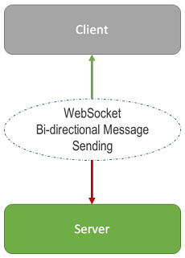
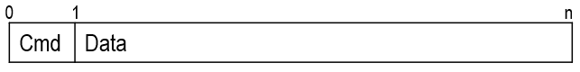

Terminal
(since rest-server 1.0.1)
GET /platform/api/term/ws
Get the web terminal basic information.
Request Headers
Log in with the OS or the "admin" account to get a JWT token (
tokenfield from the response body).Authorization: Bearer <token>Response
200 OK{ "os": "windows" | "linux", }Response
401 Unauthorized{ "Code": 401, "Message": "<the detail error message>" }
GET wss://(URL)/platform/api/term/ws
Open a local shell, making it communicate to WebSocket using stdin/stdout.
Request Headers
Log in with the OS or the "admin" account to get a JWT token (
tokenfield from the response body).Authorization: Bearer <token>Message Description

Message Format 
Outbound Message ↑
| Cmd | Data | Description |
|---|---|---|
| 1 | base64-encoded terminal output | terminal output |
| 2 | Pong message (heartbeat) | |
| 3 | The New Title | Set window title |
| 4 | {"font-size":12,"font-family":"serif"} | Set Preferences |
| 5 | false | Set auto reconnect |
| 6 | 1024 | Set Buffer Size |
Inbound Message ↓
| Cmd | Data | Description |
|---|---|---|
| 1 | base64-encoded terminal input | terminal input data |
| 2 | Ping message | |
| 3 | {"columns":128,"rows":21} | Resize Terminal |